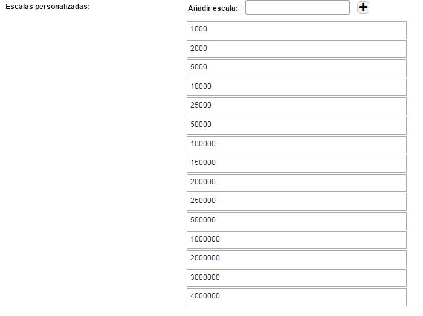
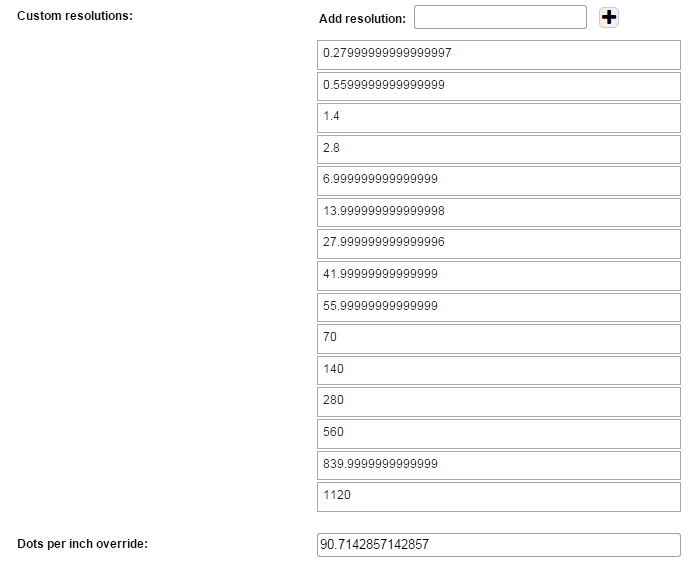
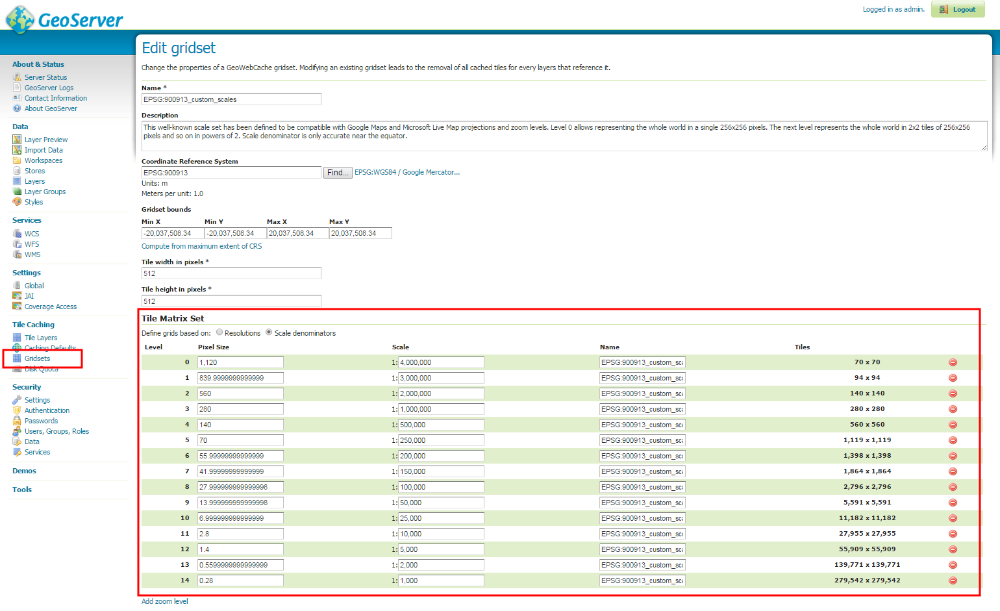
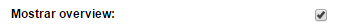
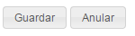

Permite de configurar los parámetros del Mapa

Define el código EPSG del sistema de proyección utilizado por el mapa.
Nota: si el mapa está configurado con capas de datos desde un servicio web de mapas a nivel global (por ejemplo Google Maps, OpenStreetMap, etc.), es necesario utilizar como sistema de proyección Web Mercator (EPSG: 900913), porque es el único suportado por estos proveedores.
Unidad del mapa
Este parámetro define la unidad de medida utilizada en el mapa. El valor depende del sistema de proyección utilizado, a según qué se utilice un sistema geográfico o proyectado.
Los valores admitidos son:
Es el nivel de zoom predefinido para el Geoportal y depende de la configuración de las escalas / resoluciones.
Coordenadas X e Y del centro del mapa, utilizado para la funcionalidad de “Zoom extensión”.
Las coordenadas tienen que expresarse en el sistema de referencia definido.
Permite definir los niveles de zoom del mapa.
Los niveles de zoom se pueden definir con dos modalidades: especificando las escalas o las resoluciones.
Con las escalas, hay que insertar los denominadores de las fracciones.
Por ejemplo, para definir niveles a las escalas 1:500, 1:1000, 1:2000, etcétera, hay que especificar los valores “500”, “1000”, “2000”.

Configuracion de las escalas personalizadas
La configuración con las resoluciones funciona un poco diferentemente: la resolución corresponde a la medida de un pixel en unidad de mapa.
Este valor, aunque más complicado de calcular, es lo utilizado por OpenLayers (la librería que se ocupa de la generación del mapa en el Geoportal).

Configuracion de las resoluciones personalizadas
Para calcular las resoluciones, lo mejor es utilizar una herramienta que hace el cálculo automáticamente en función de la escala (la relación entre la escala y la resolución depende de la proyección usada, de la unidad de medida y también de la latitud del área de interés).
Por ejemplo, una herramienta que se puede utilizar para el cálculo es disponible en Geoserver, en la página de definición de los “Gridsets”. En la sección Tile Matrix Set se puede definir una matriz especificando escalas o resoluciones y Geoserver hará la conversión automática de estos valores.

Pagina de Geoserver que puede ser utilizada para el calculo entre resoluciones y escalas
Permite modificar el valor de DPI (Dots per Inch – Puntos por Pulgada) predefinido.
DPI predefinido =72
Permite activar el Overview en el mapa.

Control de Overview
Los ajustes se pueden guardar pinchando el boton "Guardar". El boton "Anular" permite anular las modificaciones y recargar la pagina como era antes.

Control para guardar/anular las modificaciones